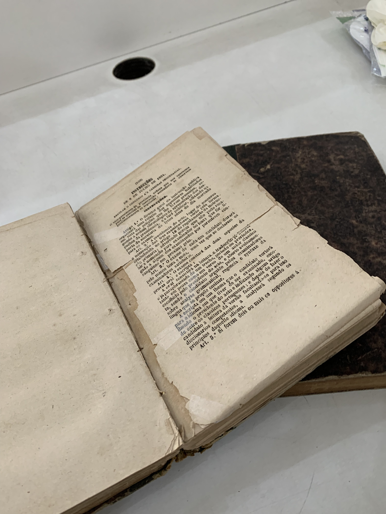

Produção Acadêmica
Projetos e pesquisas que articulam história da educação e formação docente.
Grupo de Estudo e Pesquisa
O GEPHECL reúne pesquisadores, docentes e estudantes para produção de conhecimento histórico-educacional em diálogo com memória, cultura e práticas formativas.

UFAL CEDUProjetos e pesquisas que articulam história da educação e formação docente.
Mapeamento de acervos e documentos para estudos históricos e educacionais.
Repertório de materiais históricos do período de 1840 a 1963.
O GEPHECL propõe aos seus integrantes a produção de estudos nos quais as categorias Educação, História, Cultura e Literatura atravessem a compreensão das relações sociais, identidades, memórias e subjetividades nos espaços formativos, incluindo a escola.
As reuniões do GEPHECL ocorrem às terças-feiras (quinzenalmente) das 15h às 17h, na sala 218 do CEDU.
Siga o nosso Instagram: https://www.instagram.com/gephecl.ufal/
GRUPO DE ESTUDO E PESQUISA EM HISTÓRIA DA EDUCAÇÃO, CULTURA E LITERATURA